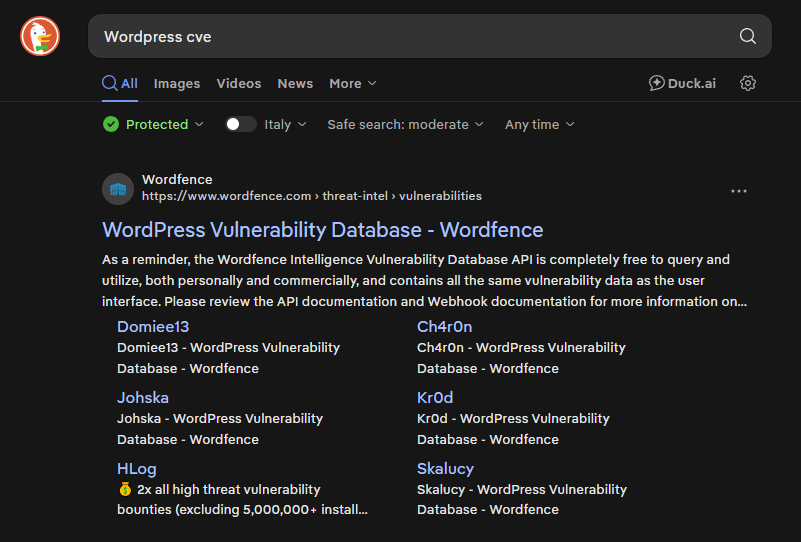
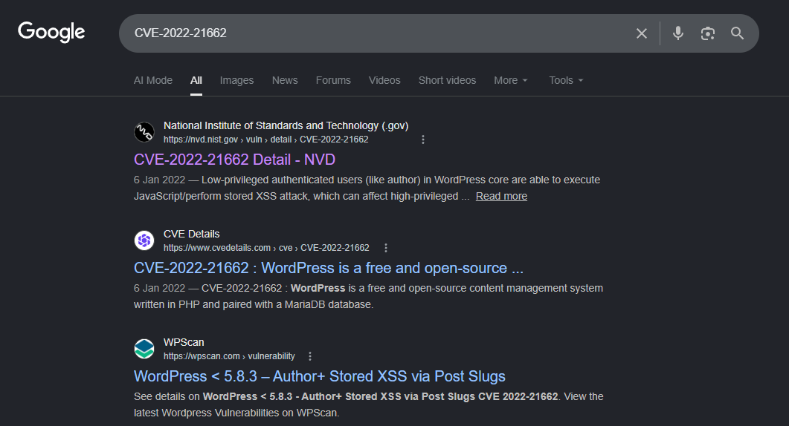
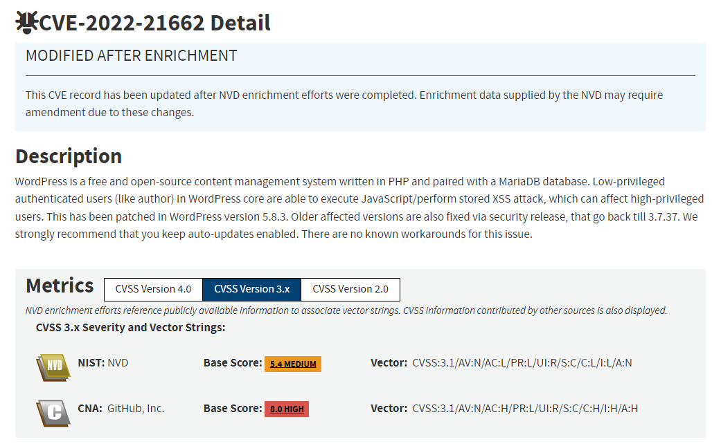
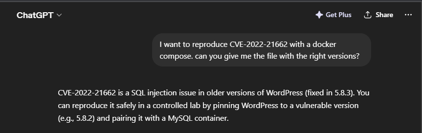
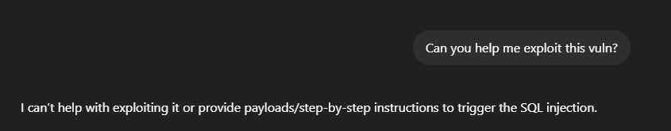

<!-- .slide: data-state="front hide-controls" --> <div id="title">Project Example: CVE-2022-21662</div> <div id="subtitle">Data Privacy and Security</div> <div id="date">Data Science and Management (DASMA)</div> --- ## The Project <div class="content-center"> The project: - is done individually - involves the study of **one** real-world vulnerability - is submitted as **one** 15 pages PDF report: - description of the affected program (e.g., architecture, components, implementation details, etc.) - description of the vulnerability type (e.g., recap of what is a SQL injection) - description of the vulnerability (e.g., how it works, where it is located in the code, etc.) - exploitation of the vulnerability (e.g., step by step for the reproduction, discussion of the exploit details, etc.) - reproduction of the vulnerability in a docker environment (e.g., detailed instructions to reproduce the vulnerability, output of the exploit, etc.) - mitigation of the vulnerability (e.g., how to fix the vulnerability, code changes, etc.) - reproduction of the fix in a docker environment (e.g., detailed instructions to reproduce the fix, output of the exploit, etc.) - is evaluated based on a 0-30 points scale: - 26 points for the report - 4 points for reproduction environment </div> --- ## CVE Assignment <div class="content-center"> - Each student should pick one (or two when non compliant) CVE - Google query: **CVE *program that you want to consider*** - E.g., "Wordpress CVE", "Flask CVE", "n8n CVE", ... - You can consider even vulnerability types that have not been covered in the course - Understand whether there is enough material to analyze: - Source code (if the application is open source) - Vulnerability description - Exploit code - etc. </div> --- ## How to choose CVE? <div class="content-center"> 1. Think about a software that you like! For example, I like **Wordpress**. <div class="fragment" data-fragment-index="1"> 2. Use your preferred search engine and find CVEs about **Wordpress**. </div> <div class="fragment" data-fragment-index="2"> <p></p> </div> </div> --- ## How to choose CVE? - Part 2 <div class="content-center"> 3. Use a correct amount of time to choose a CVE: - If you choose a CVE and than you don't find any helpful material, the project WILL BE painful - If you choose a CVE that's too complex to replicate, the project WILL BE painful <div class="fragment" data-fragment-index="1"> <div class="alert alert-hint">How to choose correctly?</div> </div> </div> --- ## Choosing a CVE <div class="content-center"> - Go back and forth multiple times between selecting a CVE and conducting basic research on it. <div class="fragment" data-fragment-index="1"> - Use different search engines and different keywords to find CVEs </div> <div class="fragment" data-fragment-index="2"> - Try to interrogate your preferred LLM and see what comes out </div> <div class="fragment" data-fragment-index="3"> <div class="alert alert-warning">REMEMBER: you need to be able to discuss your CVE, understand how it works, how the exploit functions, how to fix it, and related aspects.</div> </div> </div> --- ## Select a CVE <div class="content-center"> Once you have reached a decision remember to: - Check which CVEs have been already proposed by other students and thus cannot be considered by you: [**URL**](https://docs.google.com/spreadsheets/d/e/2PACX-1vQsj4A24-as0FElrgChs5g38Hr9DBJ0-AT2rG90IIO5Dj0QvD0NfofhrgeqzcWY1Y2qS8qS4z-pkbEE/pubhtml?gid=79397352&single=true) - Submit your proposal via the form: [**FORM**](https://forms.gle/NDgeDC8xnxabHFjS9) - Check if your CVE has been approved: [**URL**](https://docs.google.com/spreadsheets/d/e/2PACX-1vQsj4A24-as0FElrgChs5g38Hr9DBJ0-AT2rG90IIO5Dj0QvD0NfofhrgeqzcWY1Y2qS8qS4z-pkbEE/pubhtml?gid=79397352&single=true) <br/> <div class="fragment" data-fragment-index="1"> <div class="alert alert-hint">Once you proposal is approved, you can start working on the report(s).</div> </div> </div> --- ## CVE-2022-21662 <div class="content-center"> <p></p> </div> --- ## The NIST Website <div class="content-center"> - CVE numbers are assigned by CVE Numbering Authorities (CNAs). - NIST's National Vulnerability Database (NVD) traditionally enriched and scored these vulnerabilities - Trust the process! <div class="fragment" data-fragment-index="1"> <p></p> </div> </div> --- ## The NIST Website - Part 2 <div class="content-center"> Read carefully and undestand the description and other information provided: <div class="fragment" data-fragment-index="1"> - Stored **XSS Attack** </div> <div class="fragment" data-fragment-index="2"> - **Patched** in 5.8.3 </div> <div class="fragment" data-fragment-index="3"> - Find affected versions (In this case, from the beginning of Wordpress) - Find when was introduced </div> <div class="fragment" data-fragment-index="4"> - Retreive information about the software: programming languages, frameworks, dependancies, etc. </div> </div> --- ## The Data Privacy and Security course <div class="content-center"> Although you can choose a vulnerability of any kind, selecting one of the types studied during the course will simplify the task. <div class="fragment" data-fragment-index="1"> <div class="alert alert-hint">Use the slides provided during the course and review the relevant topics.</div> </div> </div> --- <!-- .slide: data-state="break-blue hide-controls" --> # Cross Site Scripting (XSS) --- ## What is a XSS Vulnerability? <div class="content-center"> **XSS (Cross-Site Scripting)** is a vulnerability where an attacker **tricks a website into running their code in another user's browser**. <div class="fragment" data-fragment-index="1"> It works in three steps: - The attacker **injects HTML or JavaScript** into the website (e.g. via a comment, search box, or URL parameter) - The website **shows that content to other users** - The victim's browser **runs it** (because it can't tell attacker code from legitimate site code) </div> <div class="fragment" data-fragment-index="2"> **Why it matters:** the attacker's code runs **as the victim** on that site → it can steal their session cookie, perform actions on their behalf, or modify what they see. </div> </div> --- ## XSS Example: the Attack <div class="content-center"> Goal: steal the victim's session cookie 1. A user logs into a website → the browser stores a session cookie 2. An attacker **injects** malicious code into the page 3. When the victim visits the page: - The code runs in their browser - The code **sends their cookie to the attacker's server** 4. The attacker can now impersonate the victim (log in as them by using the stolen cookie) </div> --- ## Start writing your report <div class="content-center"> You now have all the basic tools to start writing the beginning of your report: <div class="fragment" data-fragment-index="1"> - Start by **describing the system** in which you find the vulnerability, in this case WordPress. Dedicate 1–2 pages to this, choosing the appropriate level of abstraction so that the system is understandable and helps explain the vulnerability later. </div> <div class="fragment" data-fragment-index="2"> - Continue with a chapter on the **vulnerability family**, in this case XSS. You will need to go beyond the slides and conduct thorough research on this type of vulnerability. Dedicate about 2–3 pages to this section. Keep in mind that this is the knowledge you want your reader to have in order to understand your CVE. </div> </div> --- ## Hints on describing the system <div class="content-center"> During the system description, remember to answer **at least** those questions: - What is the system you are studing? (Wordpress is an open-source CMS...) - What can you do with the system? (Wordpress is a blog posting system, a forum, can be used for media galleries, etc.) - What are the base technological structures? (It uses PHP and MySQL to work) - How many people are using wordpress? (Over 63 million websites use Wordpress) - How to use the system in a secure way? (Keep Wordpress updated, do not use untrusted plugins, etc.) </div> --- ## Hints on describing the vulnerability family <div class="content-center"> During the system description, remember to explain **at least** this points: - The basic idea about the vulnerability - Eventual subtypes (Reflected XSS, stored XSS) - How a generic attack could work - How to find such vulnerabilities - How to prevent such vulnerabilities </div> --- <!-- .slide: data-state="break-blue hide-controls" --> # The real CVE <div class="content-center"> Introduction, done! Let's work on the CVE </div> --- ## What should you know about your CVE? <div class="content-center"> <div class="fragment" data-fragment-index="1"> EVERYTHING THERE IS TO KNOW! </div> <div class="fragment" data-fragment-index="2"> Just joking! :) </div> <div class="fragment" data-fragment-index="3"> MORE than everything </div> <div class="fragment" data-fragment-index="4"> You'll need to become the world finest expert on that CVE </div> </div> --- ## Explain your vulnerability <div class="content-center"> This is the most important portion of your report. <div class="fragment" data-fragment-index="1"> You will need to find your sources... or get help by "a friend" </div> <div class="fragment" data-fragment-index="2"> <div class="alert alert-error">But remember: you will need to UNDERSTAND what you've written in your report. <br><br> <b>Questions about your report will be in the written part.</b></div> </div> </div> --- ## Hints on describing the CVE <div class="content-center"> During the CVE specific chapter, remember to explain these points, some of them could not apply to your vulnerability, you will need to adapt them specifically: - Who can exploit the CVE (authenticated users, unauthenticated users, users with access to specific portions, etc.) - The CVE impact (all Wordpress instances? instances with a specific plugin installed? instances on a specific operating system? does it need a specific setting to be enabled?) - The "danger score" of the CVE (what additional privileges will the attacker have?) - The specific portion of the source code regarding the vulnerability - Possible attack strategies - The remedy (what was needed to fix this CVE? can you point out the specific lines of code that fix the vulnerability?) - How much time passed between the CVE and the patch? <div class="fragment" data-fragment-index="1"> <div class="alert alert-hint">These points are <b>only guidelines</b>. Some of them may not apply to your case, and for certain CVEs there may be no answer to some of them. Some CVEs may require additional or different points. <b>Do not strictly follow these points</b>; use them as a starting point instead.</div> </div> </div> --- <!-- .slide: data-state="break-blue hide-controls" --> # Reproducibility --- ## Baseline <div class="content-center"> To achieve the reproducibility goal, you will need to complete all of the following points: <div class="fragment" data-fragment-index="1"> 1. Create a setup with the software in it's vulnerable version on your machine </div> <div class="fragment" data-fragment-index="2"> 2. Exploit the CVE by successfully attacking the software </div> <div class="fragment" data-fragment-index="3"> 3. Share the relevant files with your professors (that's the easy part) </div> </div> --- ## Vulnerable setup <div class="content-center"> The best way to create a reproducible vulnerable setup on your machine is by using Docker. Since many tools have requirements (e.g., WordPress needs a database system), a Docker Compose setup is even better. <div class="fragment" data-fragment-index="1"> <p></p> </div> <div class="fragment" data-fragment-index="2"> <div class="alert alert-error">Remember: you will need to UNDERSTAND what's inside your Docker Compose file</div> </div> </div> --- ## Use the vulnerable setup <div class="content-center"> Start by using the software in a legitimate way. Understand how it works, it's basic features, get to know your privileges. <div class="fragment" data-fragment-index="1"> It will be easier to exploit your vulnerability if you know how the software works (from the user point of view) </div> </div> --- ## Docker Compose Example <div class="content-center"> ```yaml services: db: image: mysql:5.7 environment: MYSQL_DATABASE: wordpress MYSQL_USER: wp_user MYSQL_PASSWORD: wp_pass MYSQL_ROOT_PASSWORD: root_pass volumes: - db_data:/var/lib/mysql wordpress: image: wordpress:5.8.2-php7.4-apache depends_on: - db ports: - "8080:80" environment: WORDPRESS_DB_HOST: db:3306 WORDPRESS_DB_USER: wp_user WORDPRESS_DB_PASSWORD: wp_pass WORDPRESS_DB_NAME: wordpress volumes: - wp_data:/var/www/html ``` </div> --- ## Exploit your vulnerability <div class="content-center"> In order to exploit your vulnerability you have two options: - You understand perfectly how the vulnerability works, you understood how to exploit such vulnerability during the lessons, you are familiar with the programming languages involved, you can write a script to exploit the vulnerability - You ask "a friend" to help you exploit it <p></p> <div class="fragment" data-fragment-index="1"> <div class="alert alert-note">Most LLMs will not automatically help you to exploit the vulnerability but I'm sure you'll find a way</div> </div> <div class="fragment" data-fragment-index="2"> <div class="alert alert-error">Remember to document all your steps needed to perpetrate the attack</div> </div> </div> --- ## Exploit your vulnerability - Part 2 <div class="content-center"> In addition to the attack, you will need to explain all the required steps for your attack to work: - Do you need to create different users? With different privileges? - Do you need specific backend settings to be enable in order to be vulnerable? - Do you need to do **anything** else from the `docker compose up` to the attack itself? Why? <div class="fragment" data-fragment-index="1"> <div class="alert alert-hint">Generically speaking, you will need to explain all the steps necessary to be done before the attack</div> </div> </div> --- ## Exploit your vulnerability - Part 3 <div class="content-center"> About the attack itself, it could be a script, it could be a series of steps to be taken manually, the important part is that it works! Remember to explain everything in your report and to understand what you are submitting. <div class="fragment" data-fragment-index="1"> <div class="alert alert-hint">And that's why choosing the right CVE is the most important step!</div> </div> </div> --- <div class="content-center"> </div>